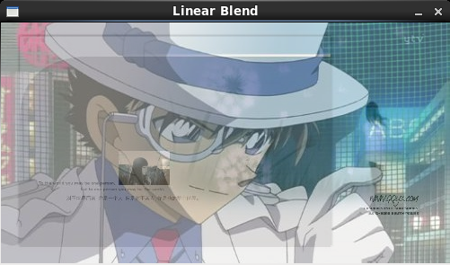

/*
* FileName : blend.cpp
* Author : xiahouzuoxin @163.com
* Version : v1.0
* Date : Mon 28 Jul 2014 08:47:59 PM CST
* Brief :
*
* Copyright (C) MICL,USTB
*/
#include <cv.h>
#include <highgui.h>
#include <stdio.h>
using namespace std;
using namespace cv;
int main(int argc, char *argv[])
{
double alpha = 0.5;
double beta;
double input;
Mat src1, src2, dst;
// User input alpha
cout<<"Simple Linear Blender" << endl;
cout<<"---------------------" << endl;
cout<<"Enter alpha [0-1]: ";
cin>>input;
if (alpha >=0 && alpha <=1) {
alpha = input;
}
// Read images
src1 = imread("../test_imgs/KeNan.jpg");
src2 = imread("../test_imgs/Background.jpg");
if (!src1.data) {
cout<<"Error loading src1\n"<<endl;
return -1;
}
if (!src2.data) {
cout<<"Error loading src2\n"<<endl;
return -1;
}
// Create WIndows
namedWindow("Linear Blend", 1);
beta = (1.0 - alpha);
addWeighted(src1, alpha, src2, beta, 0.0, dst);
imshow("Linear Blend", dst);
waitKey(0);
return 0;
}这里的图像叠加指线性叠加，设图像A的像素为fA(x)，图像B的像素为fB(x)，叠加系数为α，则线性叠加操作为：
α为0-1之间的值，从上面也可以看出，叠加必需保证两幅输入图像的尺寸大小相同。程序中的
addWeighted(src1, alpha, src2, beta, 0.0, dst);完成叠加操作。
